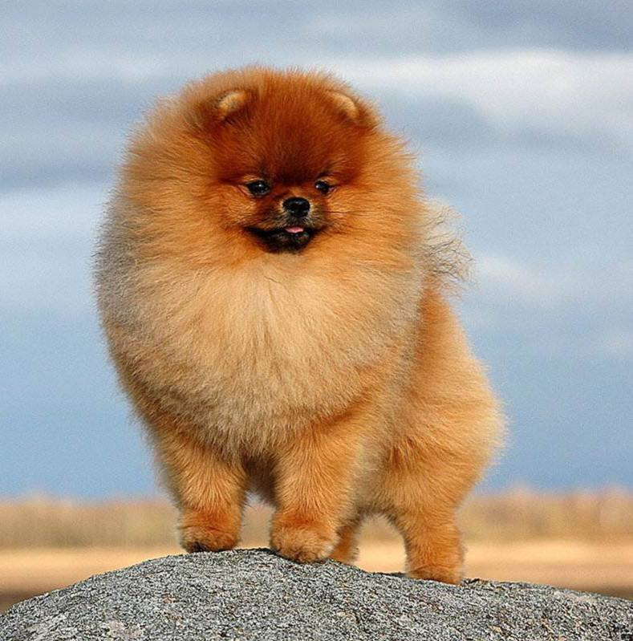

Померанский шпиц

Происхождение: Германия
Размер: Малые (рост: 18-24 см, вес: 1,8-3,5 кг)
Характер: Активные, уверенные
Особенности: Пушистая шерсть. Много лают. Подходят для квартиры
Здоровье: Глазные проблемы